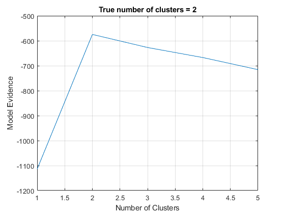

clear all
close all
N = 100;
z = randn(1,N);
W1{1} = [0.5 -0.3]';
W2{1} = [1 2]';
W1{2} = [-0.3 0.5]';
W2{2} = [2 1]';
mu1{1} = [-3 3]';
mu2{1} = [3 -3]';
mu1{2} = [2 -2]';
mu2{2} = [2 2]';
sigma = 0.2;
X1 = []; X2 = [];
for m = 1:2,
X1new = W1{m}*z + mu1{m}*ones(1,N) + sigma*randn(2,N);
X2new = W2{m}*z + mu2{m}*ones(1,N) + sigma*randn(2,N);
X1 = [X1, X1new];
X2 = [X2, X2new];
end
for m = 1:5,
cca = vbcca (X1,X2,1,m);
F(m) = cca.F;
end
figure
plot(F);
xlabel('Number of Clusters');
ylabel('Model Evidence');
grid on
title('True number of clusters = 2');
Replicate 1, 1 iterations, total sum of distances = 4627.68.
Best total sum of distances = 4627.68
Iteration10, Lower bound:-1114.1102
Iteration11, Lower bound:-1114.0182
Relative change smaller than the tolerance after11 iterations.
Replicate 1, 1 iterations, total sum of distances = 903.632.
Best total sum of distances = 903.632
Replicate 1, 2 iterations, total sum of distances = 903.632.
Best total sum of distances = 903.632
Replicate 1, 1 iterations, total sum of distances = 903.632.
Best total sum of distances = 903.632
Replicate 1, 1 iterations, total sum of distances = 903.632.
Best total sum of distances = 903.632
Replicate 1, 3 iterations, total sum of distances = 903.632.
Best total sum of distances = 903.632
Replicate 1, 1 iterations, total sum of distances = 903.632.
Best total sum of distances = 903.632
Replicate 1, 2 iterations, total sum of distances = 903.632.
Best total sum of distances = 903.632
Replicate 1, 1 iterations, total sum of distances = 903.632.
Best total sum of distances = 903.632
Replicate 1, 4 iterations, total sum of distances = 903.632.
Best total sum of distances = 903.632
Replicate 1, 3 iterations, total sum of distances = 903.632.
Best total sum of distances = 903.632
Replicate 1, 3 iterations, total sum of distances = 903.632.
Best total sum of distances = 903.632
Replicate 1, 1 iterations, total sum of distances = 903.632.
Best total sum of distances = 903.632
Replicate 1, 1 iterations, total sum of distances = 903.632.
Best total sum of distances = 903.632
Replicate 1, 2 iterations, total sum of distances = 903.632.
Best total sum of distances = 903.632
Replicate 1, 3 iterations, total sum of distances = 903.632.
Best total sum of distances = 903.632
Replicate 1, 1 iterations, total sum of distances = 903.632.
Best total sum of distances = 903.632
Replicate 1, 2 iterations, total sum of distances = 903.632.
Best total sum of distances = 903.632
Replicate 1, 2 iterations, total sum of distances = 903.632.
Best total sum of distances = 903.632
Replicate 1, 1 iterations, total sum of distances = 903.632.
Best total sum of distances = 903.632
Replicate 1, 5 iterations, total sum of distances = 903.632.
Best total sum of distances = 903.632
Replicate 1, 1 iterations, total sum of distances = 903.632.
Best total sum of distances = 903.632
Replicate 1, 2 iterations, total sum of distances = 903.632.
Best total sum of distances = 903.632
Replicate 1, 1 iterations, total sum of distances = 903.632.
Best total sum of distances = 903.632
Replicate 1, 3 iterations, total sum of distances = 903.632.
Best total sum of distances = 903.632
Replicate 1, 2 iterations, total sum of distances = 903.632.
Best total sum of distances = 903.632
Iteration27, Lower bound:-574.7093
Iteration28, Lower bound:-574.6526
Relative change smaller than the tolerance after28 iterations.
Replicate 1, 6 iterations, total sum of distances = 633.74.
Best total sum of distances = 633.74
Replicate 1, 3 iterations, total sum of distances = 637.163.
Best total sum of distances = 637.163
Replicate 1, 5 iterations, total sum of distances = 637.163.
Best total sum of distances = 637.163
Replicate 1, 2 iterations, total sum of distances = 637.163.
Best total sum of distances = 637.163
Replicate 1, 7 iterations, total sum of distances = 636.635.
Best total sum of distances = 636.635
Replicate 1, 8 iterations, total sum of distances = 637.163.
Best total sum of distances = 637.163
Replicate 1, 3 iterations, total sum of distances = 636.983.
Best total sum of distances = 636.983
Replicate 1, 6 iterations, total sum of distances = 638.751.
Best total sum of distances = 638.751
Replicate 1, 5 iterations, total sum of distances = 633.74.
Best total sum of distances = 633.74
Replicate 1, 7 iterations, total sum of distances = 638.751.
Best total sum of distances = 638.751
Replicate 1, 7 iterations, total sum of distances = 636.635.
Best total sum of distances = 636.635
Replicate 1, 5 iterations, total sum of distances = 638.751.
Best total sum of distances = 638.751
Replicate 1, 6 iterations, total sum of distances = 638.751.
Best total sum of distances = 638.751
Replicate 1, 10 iterations, total sum of distances = 636.635.
Best total sum of distances = 636.635
Replicate 1, 2 iterations, total sum of distances = 636.635.
Best total sum of distances = 636.635
Replicate 1, 6 iterations, total sum of distances = 638.751.
Best total sum of distances = 638.751
Replicate 1, 4 iterations, total sum of distances = 633.74.
Best total sum of distances = 633.74
Replicate 1, 7 iterations, total sum of distances = 637.163.
Best total sum of distances = 637.163
Replicate 1, 6 iterations, total sum of distances = 637.163.
Best total sum of distances = 637.163
Replicate 1, 7 iterations, total sum of distances = 636.635.
Best total sum of distances = 636.635
Replicate 1, 7 iterations, total sum of distances = 638.751.
Best total sum of distances = 638.751
Replicate 1, 6 iterations, total sum of distances = 633.74.
Best total sum of distances = 633.74
Replicate 1, 4 iterations, total sum of distances = 637.163.
Best total sum of distances = 637.163
Replicate 1, 2 iterations, total sum of distances = 634.399.
Best total sum of distances = 634.399
Replicate 1, 7 iterations, total sum of distances = 637.163.
Best total sum of distances = 637.163
Iteration33, Lower bound:-627.1574
Iteration34, Lower bound:-627.0962
Relative change smaller than the tolerance after34 iterations.
Replicate 1, 11 iterations, total sum of distances = 530.759.
Best total sum of distances = 530.759
Replicate 1, 4 iterations, total sum of distances = 368.372.
Best total sum of distances = 368.372
Replicate 1, 3 iterations, total sum of distances = 369.319.
Best total sum of distances = 369.319
Replicate 1, 8 iterations, total sum of distances = 536.81.
Best total sum of distances = 536.81
Replicate 1, 9 iterations, total sum of distances = 369.479.
Best total sum of distances = 369.479
Replicate 1, 9 iterations, total sum of distances = 370.166.
Best total sum of distances = 370.166
Replicate 1, 5 iterations, total sum of distances = 372.283.
Best total sum of distances = 372.283
Replicate 1, 10 iterations, total sum of distances = 370.166.
Best total sum of distances = 370.166
Replicate 1, 6 iterations, total sum of distances = 371.595.
Best total sum of distances = 371.595
Replicate 1, 5 iterations, total sum of distances = 530.759.
Best total sum of distances = 530.759
Replicate 1, 3 iterations, total sum of distances = 537.162.
Best total sum of distances = 537.162
Replicate 1, 3 iterations, total sum of distances = 530.759.
Best total sum of distances = 530.759
Replicate 1, 6 iterations, total sum of distances = 369.85.
Best total sum of distances = 369.85
Replicate 1, 7 iterations, total sum of distances = 372.283.
Best total sum of distances = 372.283
Replicate 1, 5 iterations, total sum of distances = 372.283.
Best total sum of distances = 372.283
Replicate 1, 10 iterations, total sum of distances = 369.479.
Best total sum of distances = 369.479
Replicate 1, 10 iterations, total sum of distances = 530.759.
Best total sum of distances = 530.759
Replicate 1, 4 iterations, total sum of distances = 536.81.
Best total sum of distances = 536.81
Replicate 1, 3 iterations, total sum of distances = 536.872.
Best total sum of distances = 536.872
Replicate 1, 2 iterations, total sum of distances = 536.902.
Best total sum of distances = 536.902
Replicate 1, 6 iterations, total sum of distances = 372.283.
Best total sum of distances = 372.283
Replicate 1, 7 iterations, total sum of distances = 372.283.
Best total sum of distances = 372.283
Replicate 1, 7 iterations, total sum of distances = 537.162.
Best total sum of distances = 537.162
Replicate 1, 12 iterations, total sum of distances = 530.759.
Best total sum of distances = 530.759
Replicate 1, 6 iterations, total sum of distances = 367.733.
Best total sum of distances = 367.733
Iteration35, Lower bound:-667.2656
Iteration36, Lower bound:-667.2018
Relative change smaller than the tolerance after36 iterations.
Replicate 1, 6 iterations, total sum of distances = 268.551.
Best total sum of distances = 268.551
Replicate 1, 10 iterations, total sum of distances = 269.672.
Best total sum of distances = 269.672
Replicate 1, 14 iterations, total sum of distances = 269.672.
Best total sum of distances = 269.672
Replicate 1, 3 iterations, total sum of distances = 269.362.
Best total sum of distances = 269.362
Replicate 1, 8 iterations, total sum of distances = 269.672.
Best total sum of distances = 269.672
Replicate 1, 7 iterations, total sum of distances = 270.342.
Best total sum of distances = 270.342
Replicate 1, 6 iterations, total sum of distances = 268.387.
Best total sum of distances = 268.387
Replicate 1, 4 iterations, total sum of distances = 269.362.
Best total sum of distances = 269.362
Replicate 1, 5 iterations, total sum of distances = 509.337.
Best total sum of distances = 509.337
Replicate 1, 5 iterations, total sum of distances = 270.006.
Best total sum of distances = 270.006
Replicate 1, 14 iterations, total sum of distances = 269.672.
Best total sum of distances = 269.672
Replicate 1, 11 iterations, total sum of distances = 270.693.
Best total sum of distances = 270.693
Replicate 1, 10 iterations, total sum of distances = 271.789.
Best total sum of distances = 271.789
Replicate 1, 6 iterations, total sum of distances = 269.362.
Best total sum of distances = 269.362
Replicate 1, 4 iterations, total sum of distances = 269.716.
Best total sum of distances = 269.716
Replicate 1, 11 iterations, total sum of distances = 268.551.
Best total sum of distances = 268.551
Replicate 1, 10 iterations, total sum of distances = 268.26.
Best total sum of distances = 268.26
Replicate 1, 8 iterations, total sum of distances = 271.478.
Best total sum of distances = 271.478
Replicate 1, 4 iterations, total sum of distances = 269.655.
Best total sum of distances = 269.655
Replicate 1, 5 iterations, total sum of distances = 270.342.
Best total sum of distances = 270.342
Replicate 1, 11 iterations, total sum of distances = 269.672.
Best total sum of distances = 269.672
Replicate 1, 6 iterations, total sum of distances = 270.006.
Best total sum of distances = 270.006
Replicate 1, 10 iterations, total sum of distances = 269.362.
Best total sum of distances = 269.362
Replicate 1, 9 iterations, total sum of distances = 269.362.
Best total sum of distances = 269.362
Replicate 1, 8 iterations, total sum of distances = 271.478.
Best total sum of distances = 271.478
Iteration64, Lower bound:-729.8837
Iteration128, Lower bound:-715.7472
